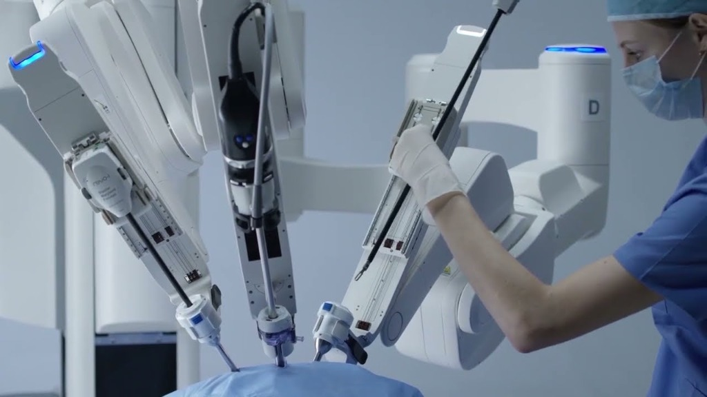

Robotic Surgery in Delhi: Dr. Aloy Mukherjee
State-of-the-art robotic-assisted procedures offering unparalleled precision, faster recovery, and minimal scarring.
Understanding Robotic Surgery
Robotic surgery is an advanced form of minimally invasive surgery that allows surgeons to perform complex procedures with high precision and control. It uses robotic arms, a high-definition 3D camera, and a surgeon-controlled console to enhance accuracy during surgery. This technology enables smaller incisions, less pain, and faster healing compared to traditional methods. Due to its effectiveness, Robotic Surgery in Delhi is becoming increasingly popular among patients seeking safer treatment options.

Benefits of Robotic Surgery
Robotic-assisted procedures offer significant advantages over traditional techniques for both the surgeon and the patient.
Enhanced Precision and Accuracy
Robotic systems provide surgeons with highly precise control, allowing them to perform complex procedures with greater accuracy. This reduces the chances of human error and improves overall surgical outcomes.
Minimally Invasive Procedure
Robotic surgery requires smaller incisions compared to traditional surgery, which leads to less pain, minimal blood loss, and reduced scarring. This makes it a safer option for many patients.
Faster Recovery Time
Patients undergoing robotic procedures often recover more quickly and can return to their daily activities sooner. Shorter hospital stays also make it more convenient and cost-effective.
Lower Risk of Complications
With better visualization and controlled movements, robotic surgery reduces the risk of infections and complications. This ensures a safer surgical experience and better long-term results.
Common Applications
Complex Hernias
Particularly large or recurrent ventral and inguinal hernias.
Colorectal Conditions
Benign and malignant diseases of the colon and rectum.
Bariatric Procedures
Gastric bypass and sleeve gastrectomy for severe obesity.
GI Disorders
Achalasia cardia, severe GERD, and stomach conditions.
The Surgical Process
Our approach ensures maximum patient safety, optimal outcomes, and swift recovery.
Pre-Surgical Preparation
Before the procedure, the patient undergoes a detailed evaluation, including medical history, physical examination, and necessary diagnostic tests. The surgeon explains the process, benefits, and precautions to ensure the patient is fully prepared.
Robotic-Assisted Procedure
During the surgery, the surgeon controls robotic arms from a console to perform the procedure with high precision. Small incisions are made, and specialized instruments, along with a 3D camera, provide a clear and magnified view of the surgical area.
Post-Surgical Recovery
After the procedure, patients are monitored closely to ensure stable recovery. Most patients experience less pain and faster healing, allowing them to resume normal activities within a short period.
Robotic vs Laparoscopic Surgery
Robotic Surgery
Offers 3D vision, 360-degree instrument articulation, and enhanced ergonomics. Ideal for highly complex surgeries and tight anatomical spaces.
Traditional Laparoscopy
Uses 2D vision and straight instruments. Excellent and highly effective for routine procedures, but less adaptable for very complex anatomy.

Experience
Why Dr. Aloy Mukherjee is the Best Robotic Surgeon in Delhi?
Dr. Aloy Mukherjee is widely recognized for his expertise, precision, and patient-centric approach in advanced surgical care. With extensive experience in minimally invasive and robotic procedures, he has successfully treated a wide range of complex conditions. His commitment to adopting the latest technology and delivering personalized treatment plans ensures better outcomes and faster recovery for patients. This dedication has established him as a Leading Robotic Surgeon in Delhi NCR, trusted by patients seeking safe and effective surgical solutions.
What sets Dr. Aloy Mukherjee apart is his focus on combining clinical excellence with compassionate care. He carefully evaluates each case and recommends the most suitable surgical approach, ensuring maximum safety and comfort. His use of advanced robotic systems allows for higher precision, minimal complications, and quicker healing.
Read MorePatient Testimonials
Frequently Asked Questions
What is robotic surgery?
Robotic surgery is a modern, minimally invasive technique where surgeons use advanced robotic systems to perform procedures with enhanced precision and control, leading to better outcomes.
Is robotic surgery safe for patients?
Yes, robotic surgery is highly safe when performed by an experienced specialist. It reduces risks like blood loss, infections, and complications while improving surgical accuracy.
What are the main advantages of this advanced surgical method?
Robotic Surgery in Delhi offers key benefits such as smaller incisions, less pain, faster healing, and minimal scarring, making it a preferred option for many patients.
How long does it take to recover after robotic surgery?
Recovery is usually quicker compared to traditional surgery. Most patients can return to their normal routine within a few days to a couple of weeks, depending on the procedure.
Who is the Top Robotic Surgeon in Delhi?
Dr. Aloy Mukherjee is regarded as one of the top robotic surgeons in Delhi, known for his expertise, precision, and successful patient outcomes.
Is robotic surgery a costly procedure?
The cost may vary based on the procedure and hospital, but Robotic Surgery in Delhi is often considered cost-effective due to faster recovery, fewer complications, and shorter hospital stays.
Book Your Appointment
Get expert surgical care. Fill out the form below and we'll get back to you promptly.
Visit Us
Address
2nd floor, Indraprastha Apollo Hospital, Room No. 1265,
Gate No. 10, Jasola Vihar, New Delhi, Delhi 110076
Contact Information
Phone
+91 9810532834
contact@draloymukherjee.com
Timings
Monday- Saturday: 08:00 AM- 08:00 PM
Sunday: Closed
Emergency: 24/7 Available